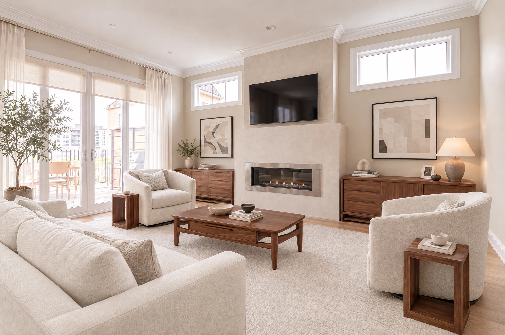

Original reference→
Original reference→The original Georgetown model home
The builder’s furnished home, preserved as our starting point. Classic trim, warm wood, patterned wallcoverings and statement lighting give each room its original character.
View Model Home→ Option 1→
Option 1→Warm modern living, with a boutique-hotel feel
Warm mineral walls, natural oak and rich walnut with selected pearl onyx-, quartzite- and limestone-look porcelain. Ivory, oatmeal and charcoal textiles preserve the original bedroom identities; exposed oak stairs connect the floors.
Explore Option 1→ Option 2→
Option 2→Your actual RH collection, smoky brown oak, polished silver and a tailored pearl-and-blue palette.
A complete Cocoa & Chrome home using every owned piece once. Pearl/greige walls and pale neutral oak give the white upholstery contrast; brown oak, polished stainless and nickel bring definition, with restrained blue and small butter-yellow accents. New furniture and varied fitted work complete the remaining rooms.
Explore Option 2→
Option 3→Warm mineral architecture, your owned collection and considered new pieces
Warm mineral walls, natural oak, walnut and selected stone-look finishes create a coherent home around all 39 pieces you already own. New selections complete the rooms, with coordinated lighting and a detailed contractor build brief.
Explore Option 3→Filmed on site · 19 min
Video walkthrough
A continuous filmed walk through every floor of the house, from the entrance gallery to the penthouse terraces.
Already owned
Current Furniture
29 product entries · 39 pieces. Your RH furniture, lighting and accessories, with specifications and original product links.